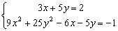

聯立二元一次及二次方程
程式編寫日期: 2006年9月28日
程式(74步)
| 1 | ENT | 2. | Kin 5 | 3. | ENT | 4. | Kin 6 | 5. | ENT |
| 6. | X←→K6 | 7. | Kin ÷ 5 | 8. | Kin ÷ 6 | 9. | ENT | 10. | - |
| 11. | ENT | 12. | Kin 1 | 13. | × | 14. | Kout 5 | 15. | - |
| 16. | ENT | 17. | Kin 4 | 18. | × | 19. | Kout 5 | 20. | × |
| 21. | Kin - 1 | 22. | Kin - 1 | 23. | Kout 5 | 24. | +/- | 25. | Kin 2 |
| 26. | = | 27. | Min | 28. | M+ | 29. | Kout 6 | 30. | Kin × 1 |
| 31. | Kin × 4 | 32. | ENT | 33. | Kin + 1 | 34. | ENT | 35. | × |
| 36. | Kin + 4 | 37. | Kout 5 | 38. | = | 39. | Kin - 1 | 40. | Kout 6 |
| 41. | Kin × 4 | 42. | ENT | 43. | Kin - 4 | 44. | Kout 1 | 45. | Kin 3 |
| 46. | x2 | 47. | - | 48. | 2 | 49. | × | 50. | MR |
| 51. | × | 52. | Kout 4 | 53. | = | 54. | √ | 55. | Kin + 1 |
| 56. | Kin - 3 | 57. | MR | 58. | +/- | 59. | Kin ÷ 1 | 60 | Kin ÷ 3 |
| 61. | Kout 1 | 62. | Kin × 2 | 63. | HLT | 64. | Kout 6 | 65. | Kin + 2 |
| 66. | Kout 2 | 67. | HLT | 68. | Kout 3 | 69. | Min | 70. | Kin × 5 |
| 71. | HLT | 72. | Kout 5 | 73. | Kin - 6 | 74. | Kout 6 | 75. |
LRN 模式輸入程式(供 fx-3800P使用，程式長度: 74步 )
| ENT 1 | Kin 5 | ENT 1 | Kin 6 | ENT 0 |
| X←→K6 | Kin ÷ 5 | Kin ÷ 6 | ENT 1 | - |
| ENT 1 | Kin 1 | × | Kout 5 | - |
| ENT 1 | Kin 4 | × | Kout 5 | × |
| Kin - 1 | Kin - 1 | Kout 5 | +/- | Kin 2 |
| = | Min | M+ | Kout 6 | Kin × 1 |
| Kin × 4 | ENT 1 | Kin + 1 | ENT 1 | × |
| Kin + 4 | Kout 5 | = | Kin - 1 | Kout 6 |
| Kin × 4 | ENT 1 | Kin - 4 | Kout 1 | Kin 3 |
| x2 | - | 2 | × | MR |
| × | Kout 4 | = | √ | Kin + 1 |
| Kin - 3 | MR | +/- | Kin ÷ 1 | Kin ÷ 3 |
| Kout 1 | Kin × 2 | HLT | Kout 6 | Kin + 2 |
| Kout 2 | HLT | Kout 3 | Min | Kin × 5 |
| HLT | Kout 5 | Kin - 6 | Kout 6 | MODE . |
例題1: 解聯立方程:

按 P1 再按 3 RUN 5 RUN 8 RUN 3 RUN 4 RUN 5 RUN 3 RUN 5 RUN 20
RUN (顯示0.333333333) RUN (顯示1.4，即第一組的解答為 x=0.333333333, y=1.4)
RUN (顯示1) RUN (顯示1，即第一組的解答為 x=1, y=1)
程式執行完成後，按 Kout 1 及 Kout 2分別顯示第一組解答案的x及y的值，按 MR 及 Kout 6分別顯示第二組解答案的x及y的值。
若果希望將答案轉化為分數，可以配合小數轉換分數程式(II)或小數轉換分數程式(III)的第二個程式
例題2: 解聯立方程:

假設方程的程式儲存在P1，小數轉換分數程式儲存在P2。
按 P1 再按 3 RUN 5 RUN 2 RUN 9 RUN 0 RUN 25 RUN 6 +/- RUN 5 +/- RUN 1 +/-
RUN (顯示0.333333333) RUN (顯示0.2，即第一組的解答為 x=0.333333333, y=0.2)
RUN (顯示0.5) RUN (顯示0.1，即第一組的解答為 x=0.5, y=0.1)
再按 P2 (顯示1) RUN (顯示10，即0.1=1/10)
再按 MR P2 (顯示1) RUN (顯示2，即0.5=1/2，所以第二組解答為x=1/2, y=1/10)
再按 Kout 1 P2 (顯示1) RUN (顯示3，即是0.333333333=1/3)
再按 Kout 2 P2 (顯示1) RUN (顯示5，即是0.2=1/5，所以第一組解答為x=1/3, y=1/5)
註1: 答案若為無理數則不能成功轉化為分數(分子或分母會顯示很大的的數值(大於1010)，另外因為計數機的誤差問題，小數答案亦有可能成功轉化為分數。
註2: 使用小數轉換分數(II/III)的第二個程式後，第二組解答y值的記憶(K6)不能保留。